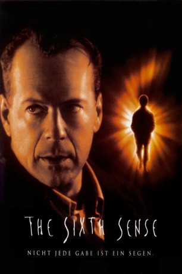
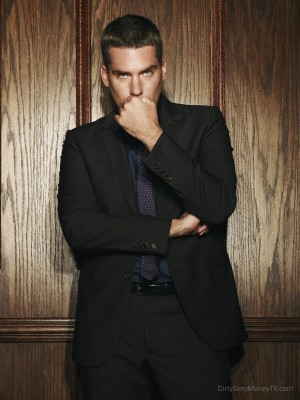
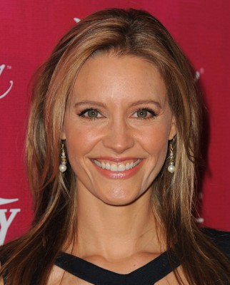
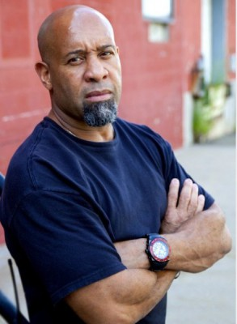
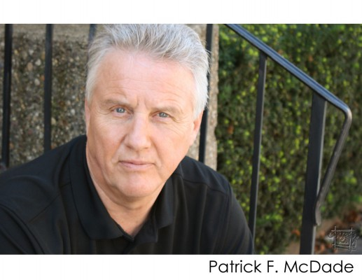

#6898 Sixth Sense
Alternativ: The Sixth Sense
Auszeichnungen: für 6 Oscars nominiert
 
 IMDB-Wertung: 8.1 / 10
IMDB-Wertung: 8.1 / 10  IMDB-TOP-Platzierung: 159
IMDB-TOP-Platzierung: 159  Metascore: 0
Metascore: 0 
Der Kinderpsychologe Dr. Malcolm Crowe feiert mit seiner Frau eine für ihn bedeutsame Auszeichnung. An diesem Abend wird er von Vincent Grey überrascht, einem ehemaligen Patienten, dem Crowe nicht helfen konnte. Sichtlich verzweifelt schießt er auf Dr. Crowe und begeht daraufhin Selbstmord.Im darauf folgenden Jahr betreut Dr. Crowe den neunjährigen Cole. Er erinnert ihn an seinen früheren Patienten Grey. Der Junge scheint von großen Ängsten geplagt, die er niemandem anvertraut. Von seinen Klassenkameraden wird er mit „Psycho“ angesprochen und gemieden. Sogar sein Lehrer bezeichnet ihn nach einem Streit so. Coles Mutter ist verzweifelt, und Dr. Crowe scheint dem Jungen nicht helfen zu können. Nach und nach gewinnt er schließlich das Vertrauen des Jungen; Cole verrät ihm sein Geheimnis: „Ich sehe tote Menschen. Die sind wütend. Die wissen nicht, dass sie tot sind.“ Zunächst glaubt Dr. Crowe ihm nicht.
Jahr: 1999
Dauer: 107 Minuten
FSK: 16
Land: USA Studio: Buena Vista PicturesTonspuren: DTS - ,
Untertitel:
Auflösung: 1080p (1920x1080) Größe: 10240 MB
Genre: Thriller, Drama, Mystery
Regisseur:  M. Night Shyamalan
M. Night Shyamalan
Drehbuch: M. Night Shyamalan
Soundtrack:
Darsteller:
 Bruce Willis als Dr. Malcolm Crowe
Bruce Willis als Dr. Malcolm Crowe Haley Joel Osment als Cole Sear
Haley Joel Osment als Cole Sear Toni Collette als Lynn Sear
Toni Collette als Lynn Sear Olivia Williams als Anna Crowe
Olivia Williams als Anna Crowe Trevor Morgan als Tommy Tammisimo
Trevor Morgan als Tommy Tammisimo Donnie Wahlberg als Vincent Grey
Donnie Wahlberg als Vincent Grey Peter Anthony Tambakis als Darren
Peter Anthony Tambakis als Darren- Jeffrey Zubernis als Bobby
-  Glenn Fitzgerald als Sean
 Mischa Barton als Kyra Collins
Mischa Barton als Kyra Collins- Angelica Page als Mrs. Collins
- Lisa Summerour als Bridesmaid
- Firdous Bamji als Young Man Buying Ring
- Hayden Saunier als Darren's Mom
- Sarah Ripard als Visitor #3
-  KaDee Strickland als Visitor #5
- Michael J. Lyons als Visitor #6
- Kate Kearney-Patch als Society Lady #2
 M. Night Shyamalan als Dr. Hill
M. Night Shyamalan als Dr. Hill- Nico Woulard als Hanged Child
-  Keith Woulard als Hanged Male
-  Patrick McDade als Shaken Driver
 Bob Bowersox als Restaurant Patron , uncredited
Bob Bowersox als Restaurant Patron , uncredited Mark Falvo als Restaurant Patron , uncredited
Mark Falvo als Restaurant Patron , uncredited- Colleen June McQuaide als Tommy's TV Mom , uncredited
- Jonathan Nation als Restaurant Patron , uncredited
 Sean Oliver als Ghost in the Dungeon , uncredited
Sean Oliver als Ghost in the Dungeon , uncredited- Bruce Norris als Stanley Cunningham
- Greg Wood als Mr. Collins
- Samia Shoaib als Young Woman Buying Ring
- Janis Dardaris als Kitchen Woman
- Neill Hartley als Visitor #2
- Heidi Fischer als Visitor #4
- Samantha Fitzpatrick als Kyra's Sister
- Holly Cross Vagley als Society Lady #1
- Marilyn Shanok als Woman at Accident
- Wes Heywood als Commercial Narrator
- Carol Nielson als Hanged Female
- Jodi Dawson als Burnt Teacher
- Tony Michael Donnelly als Gunshot Boy
- Ronnie Lea als Secretary
- Carlos Xavier Lopez als Spanish Ghost on Tape
- Gino Inverso als Young Vincent
- Ellen Sheppard als Mrs. Sloan
- Tom McLaughlin als Anna's Father
- Candy Aston-Dennis als Anna's Mother
- Jose L. Rodriguez als Husband
- Gina Allegro als Bride's Friend , uncredited
- Luke Burnyeat als Waiter , uncredited
- Matt Casale als Man Crossing the Street , uncredited
Datei: X:\1999\Sixth Sense (1999, FSK16, 1920x1080).mkv seit 06.09.2017
Festplatte: HD 1996-2002
 Es gibt insgesamt 81 Filme in der Gruppe '1999'
Es gibt insgesamt 81 Filme in der Gruppe '1999'